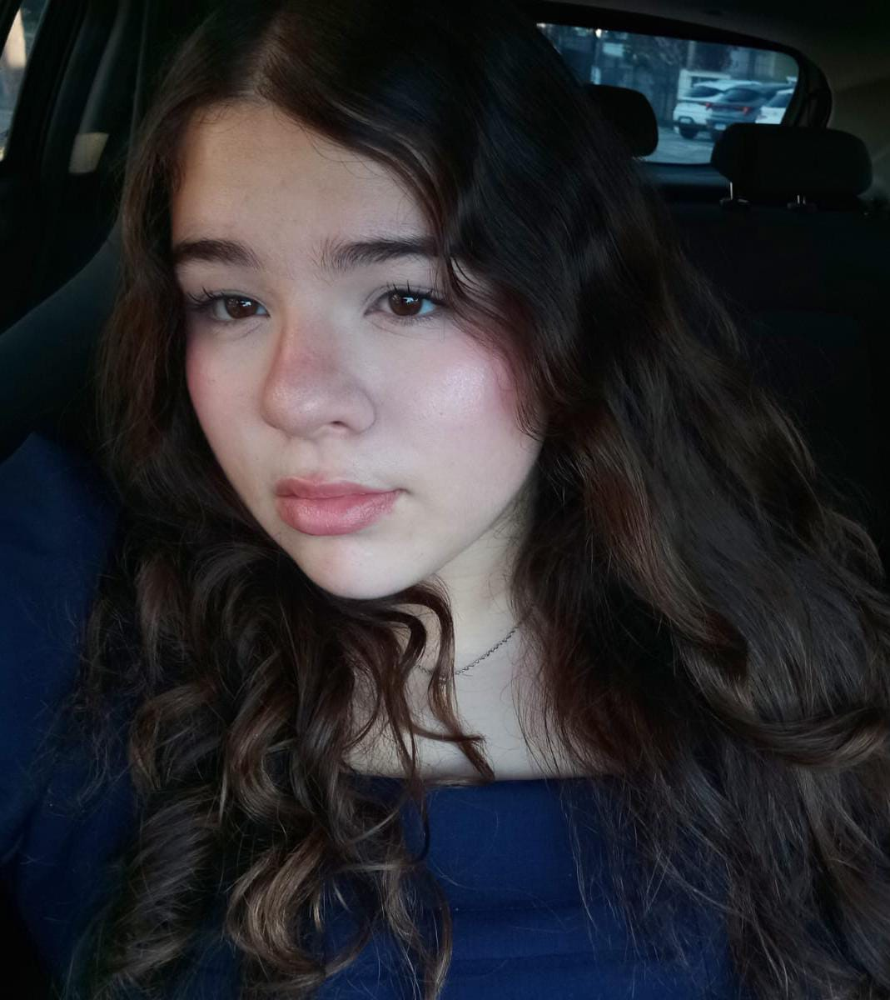

Sophia Tota Magalhães
📧 Email: sophia.ttota@gmail.com\
📱 Telefone: (15) 99189-1791\
📍 Cidade: Sorocaba - SP
🔗LinkedIn:www.linkedin.com/in/sophia-tota-magalhães-a4162b405

Objeivo:
Busco minha primeira oportunidade profissional como Jovem Aprendiz, com o objetivo de desenvolver minhas habilidades, adquirir experiência e aplicar meus conhecimentos. Sou uma pessoa responsável, proativa e comprometida, com disposição para aprender, trabalhar em equipe e contribuir para os resultados da empresa.
Formação acadêmica:
- Ensino Médio — 2º ano, cursando.
- Conclusão: 2027.
Experiências e projetos:
- Participação em hackathon de empresas de TI.
- Desenvolvimento de criatividade e resolução de problemas.
- Atuação como monitora em buffet infantil.
- Acompanhamento e organização de atividades infantis.
- Auxílio na organização de eventos esportivos.
- Trabalho em equipe e apoio na realização de eventos.
Cursos e conhecimentos:
- Desenvolvimento de Sistemas — SENAI (2º de 4 semestres).
- Robótica — conhecimentos aprofundados em Micro:bit.
- Canva — criação e edição de materiais visuais.
Habilidades:
- Organização e responsabilidade.
- Liderança.
- Trabalho em equipe.
- Proatividade e iniciativa.
- Comprometimento com as atividades.
- Facilidade para aprender e resolver problemas.